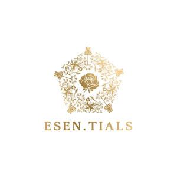

Trade Mark Journal No.2026/012 20 March 2026
UK00004349690 5 March 2026 (3,5,35)

- Class 3
- Skincare cosmetics; Cosmetic moisturisers; Anti-aging creams [for cosmetic use]; Suncare lotions [for cosmetic use]; Facial moisturisers [cosmetic]; Skin cleansers [cosmetic]; Sunscreens [for cosmetic use]; Acne cleansers, cosmetic; Cosmetic facial lotions; Facial lotions [cosmetic]; Creams (Cosmetic -); Cosmetic creams; Facial cleansers [cosmetic]; Anti-aging moisturizers used as cosmetics; Skin balms [cosmetic]; Anti-ageing serums for cosmetic purposes; Anti-wrinkle creams [for cosmetic use]; Cosmetics and cosmetic preparations; Cosmetic creams for the skin; Skin creams [cosmetic]; Skin creams [for cosmetic use]; Moisturising skin lotions [cosmetic]; Facial creams [cosmetic]; Facial creams [for cosmetic use]; After-sun lotions [for cosmetic use]; Skin care lotions [cosmetic]; Cosmetic products in the form of aerosols for skincare; Cleansing creams [cosmetic]; Sunscreen creams [for cosmetic use]; Skin care creams [cosmetic]; Cosmetic creams for skin care; Moisturising skin creams [cosmetic]; Anti-aging skincare preparations; Cosmetic creams and lotions; Cosmetic hair lotions; Cosmetic soaps; Moisturisers [cosmetics]; Cosmetic nourishing creams; Cosmetic massage creams; Cosmetic skin fresheners; Skin whitening preparations [cosmetic]; Skin cream [for cosmetic use]; Cosmetics; Skin toners [cosmetic]; Hair care lotions [for cosmetic use]; Self-tanning preparations [cosmetic]; Skin moisturizers used as cosmetics; Facial creams [cosmetics]; Anti-wrinkle cream [for cosmetic use]; Hair care creams [for cosmetic use]; Cosmetic soap; Cosmetic products for the shower; Facial toners [cosmetic]; Skin hydrators for cosmetic purposes; Skin care oils [cosmetic]; Anti-aging serum for cosmetic use; Facial scrubs [cosmetic]; Tonics [cosmetic]; Facial cream [for cosmetic use]; Toning creams [cosmetic]; Serums for cosmetic purposes; Cosmetic skin enhancers; Cosmetic sunscreen preparations; Cosmetic suntan lotions; Lotions for cosmetic purposes; Cosmetic sun-protecting preparations; Sun care lotions [for cosmetic use]; Skin care (Cosmetic preparations for -); Cosmetic preparations for skin care; Cosmetic masks; Moisturising gels [cosmetic]; Moisturising body lotion [cosmetic]; Cosmetic preparations for skin firming; Retinol cream for cosmetic purposes; Exfoliating scrubs for cosmetic purposes; Softening cleanser [cosmetic]; Skin care cosmetics; Skin conditioning creams for cosmetic purposes; Beauty care cosmetics; Cosmetic facial masks; Hydrating creams for cosmetic use; Cosmetic oils for the epidermis; Facial washes [cosmetic]; Skincare preparations; Pro-collagen for cosmetic purposes; Skin masks [cosmetics]; Cosmetic preparations for skin renewal; Cosmetic preparations; Topical skin sprays for cosmetic purposes; Beauty lotions; Cosmetic nail care preparations; Cosmetic hand creams; Hydrolyzed collagen for cosmetic purposes.
- Class 5
- Protein supplements; Anti-oxidant supplements; Vitamin supplements; Vitamin and mineral supplements; Mineral nutritional supplements; Anti-oxidant food supplements; Nutritional supplements; Liquid dietary supplements; Food supplements; Dietary supplements; Dietary supplements consisting of vitamins; Dietary supplements in powder form; Vitamin preparations in the nature of food supplements; Dietary and nutritional supplements; Nutraceuticals for use as a dietary supplement; Health food supplements made principally of vitamins; Food supplements in liquid form; Dietary supplements for humans; Nutritional supplements consisting primarily of zinc; Food supplements for sportsmen; Health-aid foods supplements containing ginseng; Multivitamins; Health food supplements made principally of minerals; Multi-vitamin preparations; Dietary supplements consisting primarily of magnesium; Food supplements consisting of amino acids; Nutritional supplements consisting primarily of iron; Nutritional supplement meal replacement bars for boosting energy; Dietary supplements and dietetic preparations; Anti-oxidants obtained from herbal sources; Powdered nutritional supplement drink mix; Gummy vitamins; Powdered nutritional supplement energy drink mix; Dietary supplements promoting fitness and endurance; Dietary supplement drinks; Preparations of vitamins; Activated charcoal dietary supplements; Vitamin tablets; Vitamin and mineral preparations; Fitness and endurance supplements.
- Class 35
- Wholesale services in relation to dietary supplements; Online retail services relating to cosmetics; Online retail store services relating to cosmetic and beauty products; Advertising services relating to cosmetics; Retail services in relation to dietary supplements; Mail order retail services for cosmetics; Retail services in relation to non-alcoholic beverages.
Esen.tials Beauty Limited